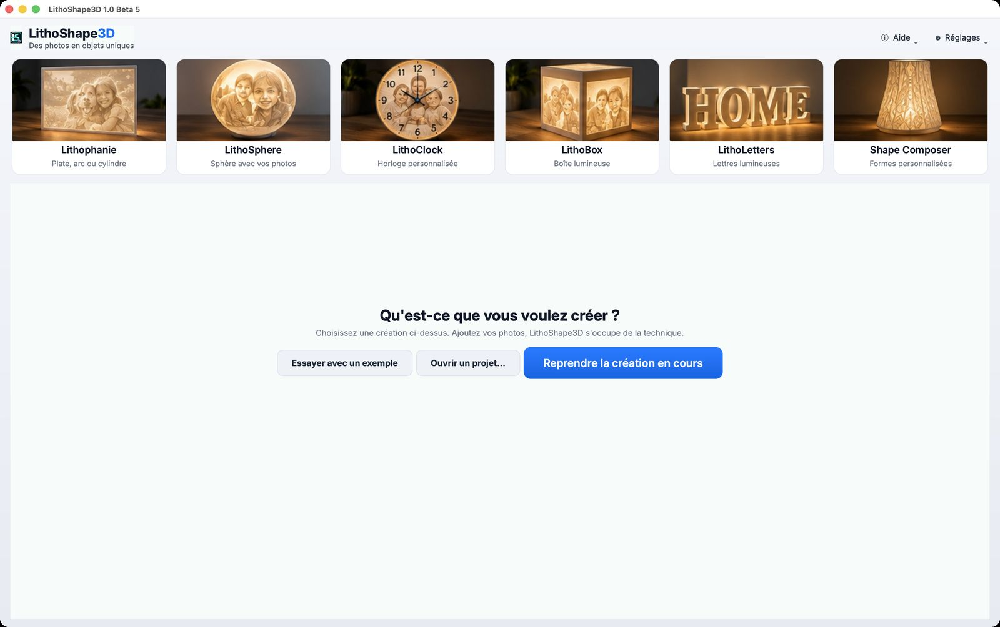

Lithophane
Flat panel, arch or half-cylinder, with a lighting stand if you wish.
LithoShape3D turns a photo into a lithophane, a sphere or a clock, ready to 3D print. You see the lit result before you even start printing.
The preview is free. A license is needed to create print files. Your photos stay on your computer.

A lithophane is thicker or thinner depending on the photo: light behind the piece reveals the image. Drag the slider to see the difference.

 OffLit
OffLit
Load a photo, pick a shape, adjust: the software handles the geometry.
Flat panel, arch or half-cylinder, with a lighting stand if you wish.
A photo on a glowing sphere, with cap, riser and base.

A clock from your photo: numerals, case and frame. In relief, or flat in several colors.
Three steps, no complicated settings: the software suggests recommended values.
JPG, PNG or SVG. Crop, zoom and reframe to the format you want. Automatic background removal is available (model downloaded once).
Shape, size, thickness. The 3D preview updates, with the Lit button to see the backlit result.
The software exports STL files (and multicolor 3MF) that you open in your slicer, such as Bambu Studio, OrcaSlicer, PrusaSlicer or Cura.
A clear interface designed to go from photo to part without detours.



What makes the difference between a nice image and a successful part.
See the backlit result before printing, plus an exploded view to understand the assembly.
2 to 4 colors printed flat, one filament per color (up to the 4 slots of an AMS), no supports.
The software checks that meshes are closed and printable, and can verify your files with “Help → Check a file”.
Calculations run on your computer: your photos are never sent over the internet.
Windows 10/11, macOS Apple Silicon and Intel. Interface in French and English.
Online installation and user guide, always up to date.
The preview is free. To create print files you need a license: a test license is available through the beta program.
The software is not yet signed with Microsoft and Apple: a warning appears on first launch, this is expected. The guide explains how to allow it in one minute.
Another question? Write to us.
A 3D-printed plate whose thickness varies with the photo: thick areas let little light through, thin areas let a lot through. Lit from behind, the photo appears.
No. Calculations run on your computer and your photos never leave it. Only license activation contacts the license server (key and device identifier).
STL files, and multicolor 3MF for the “Flat” mode. They open in common slicers (Bambu Studio, OrcaSlicer, PrusaSlicer, Cura). The software does not drive the printer: your slicer prepares the print.
The software is not yet signed with Microsoft and Apple. Windows (“Windows protected your PC”) and macOS ask for confirmation on first launch. The installation guide shows what to do.
A test license is available through the beta program. If you lose your key, the same page offers “Lost your key?”. The support code shown in “Help → License” helps us find your license.
The test license is for personal, non-commercial use. A commercial offer is planned: it is not open yet.
Download LithoShape3D and try it with one of your photos.
Download for free